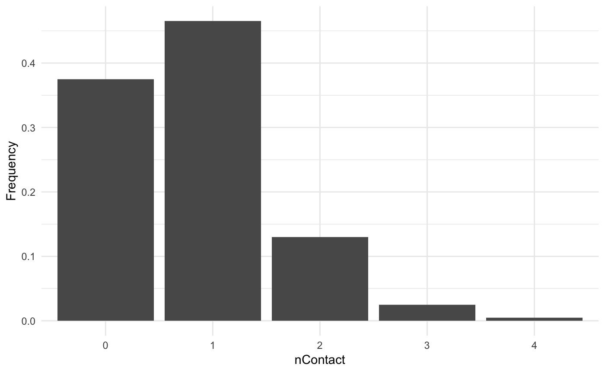
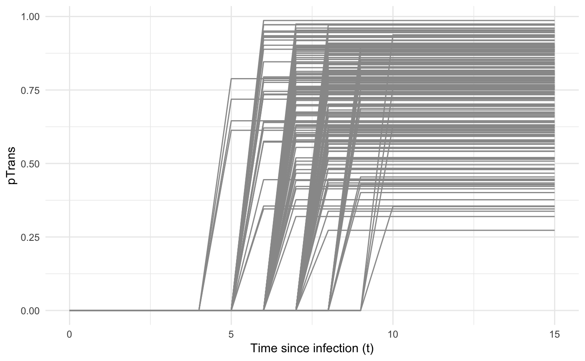
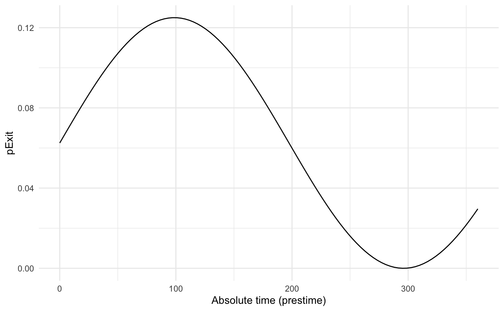
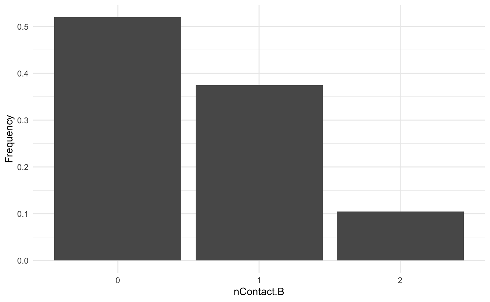
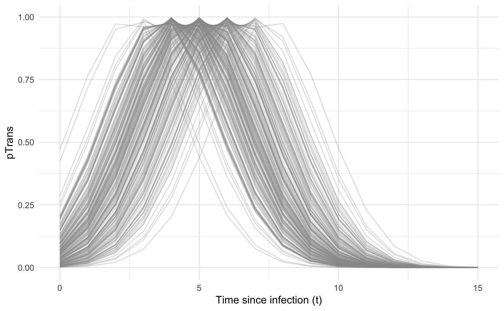

Spread of a pathogen in a discrete structured population
Sebastian Lequime
2020-04-03
Source:vignettes/discrete.Rmd
discrete.RmdAside from the simple simulation set up, explored in another tutorial, where hosts are “not structured”, nosoi can take into account a population structured either in discrete states or in a continuous space. We focus here on a discrete state structure (for the continuous structure, see this tutorial).
The discrete structure is intended to allow the simulation to take place in a geographical context with discrete states such as countries, regions, islands, cities. Note that other kind of structures could be taken into account (e.g. high risk/low risk, etc). In this setting, parameter values are allowed to change according to the host’s current location among the available states.
This tutorial focuses on setting up a nosoi simulation for a pathogen which host population is structured between different locations.
Structure of the population
We consider here a population of hosts that are in three different locations called “A”, “B” and “C”. Hosts can move (if they undergo a movement event) between these locations with a certain probability that can be set directly, or derived from other data. Here, we take the transition matrix, called here after structure.matrix, to be:
#> A B C
#> A 0.0 0.5 0.5
#> B 0.2 0.0 0.8
#> C 0.4 0.6 0.0It can graphically be represented as follow:

For structure.matrix to be adequate, a few rules have to be followed:
-
structure.matrixshould be of classmatrix; -
structure.matrixshould have the same number of rows and columns, and they should have the same names; -
structure.matrixrows represent departure states and columns arrival states. Each coefficient is the probability of moving from a departure state to a different arrival state if a movement is made. Row values thus sum up to 1.
Setting up the simulation
The wrapper function nosoiSim takes all the arguments that will be passed down to the simulator, in the case of this tutorial singleDiscrete (for “single host, discrete structure”). We thus start by providing the options type="single" and popStructure="discrete" to set up the analysis:
This simulation type requires several arguments or options in order to run, namely:
length.simmax.infectedinit.individualsinit.structurestructure.matrix-
pExitwithparam.pExit,timeDep.pExit,diff.pExitandhostCount.pExit -
pMovewithparam.pMove,timeDep.pMove,diff.pMoveandhostCount.pMove -
nContactwithparam.nContact,timeDep.nContact,diff.nContactandhostCount.nContact -
pTranswithparam.pTrans,timeDep.pTrans,diff.pTransandhostCount.pTrans prefix.host.Aprint.progressprint.step
All the param.* elements provide individual-level parameters to be taken into account, while the timeDep.* elements inform the simulator if the “absolute” simulation time should be taken into account. The diff.* elements inform the simulator if there is a differential probability according to the state the host is currently in and the hostCount.* elements inform the simulator if the number of host in each state has to be taken into account. All parameters must be provided, although timeDep.*, diff.* and hostCount.* have default values set to FALSE; if you do not want to use these options, then you do not have to explicitly provide a value.
General parameters
length.sim and max.infected are general parameters that define the simulation:
-
length.simis the maximum number of time units (e.g. days, months, years, or another time unit of choice) during which the simulation will be run. -
max.infectedis the maximum number of individuals that can be infected during the simulation.
init.individuals and init.structure are the “seeding parameters”:
-
init.individualsdefines the number of individuals (an integer above 1) that will start a transmission chain. Keep in mind that you will have as many transmission chains as initial individuals, which is equivalent as launching a number of independent nosoi simulations. -
init.structurespecifies the original location of these individuals in the structured population (has to be the same original location for all starting individuals). The location provided ininit.structureshould of course be present in thestructure.matrix.
Here, we will run a simulation starting with 1 individual, for a maximum of 1,000 infected individuals and a maximum time of 300 days.
Core functions
The core functions pExit, nContact, pMove and pTrans each follow the same principles to be set up.
To accommodate for different scenarios, they can be constant, time-dependent (using the relative time since infection t for each individual or the “absolute” time pres.time of the simulation) or even individually parameterized, to include some stochasticity at the individual-host level.
In any case, the provided function, like all other core functions in nosoi, has to be expressed as a function of time t, even if time is not used to compute the probability.
In case the function uses individual-based parameters, they must be specified in a list of functions (called param.pExit, param.nContact, param.pMove or param.pTrans) (see Get started). If no individual-based parameters are used, then these lists are set to NA.
Keep in mind that
pExit,pMove, andpTranshave to return a probability (i.e. a value between 0 and 1) whilenContactshould return a natural number (positive integer or zero).
Several parameters, such as the time since infection, the “absolute” time of the simulation, the location (in the discrete states) and individual-based parameters can be combined within the same function.
nosoican be flexible in what it allows as parameters in your function, but a common general structure should be observed. The argument of the function should be (in that order):
- time since infection
t(compulsory);- “absolute” time
prestime(optional);- current state
current.in(optional);- host count in state
host.count(optional);- other individual-based parameter(s), provided in
param.function.If one of the argument is not used (except
t), then you do not have to provide it and can continue with the next argument.
pExit, param.pExit, timeDep.pExit, diff.pExit and hostCount.pExit
-
pExitis the first required fundamental parameter and provides a daily probability for a host to leave the simulation (either cured, died, etc.). -
param.pExitis the list of functions needed to individually parameterizepExit(see Get started). The name of each function in the list has to match the name of the parameter it is sampling forpExit. -
timeDep.pExitallows forpExitto be dependent on the “absolute” time of the simulation, to account - for example - for seasonality or other external time-related covariates. By default,timeDep.pExitis set toFALSE. -
diff.pExitallowspExitto differ according to the current discrete state of the host. This can be useful, for example, if one state has a higher mortality rate (or better cures!) for the infection, in that case the probability to exit the simulation is higher. By default,diff.pExitis set toFALSE. Be careful, every state should give back a result forpExit. -
hostCount.pExitallowspExitto differ according to the number of hosts currently in a state. By default,hostCount.pExitis set toFALSE. To usehostCount.pExit,diff.pExithas to be set toTRUEtoo.
pMove, param.pMove, timeDep.pMove, diff.pMove and hostCount.pMove
-
pMoveis the probability (per unit of time) for a host to do move, i.e. to leave its current state (for example, leaving state “A”). It should not be confused with the probabilities extracted from thestructure.matrix, which represent the probability to go to a specific location once a movement is ongoing (for example, going to “B” or “C” while coming from “A”). -
param.pMoveis the list of functions needed to individually parameterizepMove(see Get started). The name of each function in the list has to match the name of the parameter it is sampling forpMove. -
timeDep.pMoveallows forpMoveto be dependent of the “absolute” time of the simulation, to account, for example, for seasonality or other external time related covariates. By default,timeDep.pMoveis set toFALSE. -
diff.pMoveallowspMoveto be different according to the current discrete state of the host, to account, for example, of different traveling rates in different states. By default,diff.pMoveis set toFALSE. Be careful, every state should give back a result forpMove. -
hostCount.pMoveallows forpMoveto differ according to the number of hosts currently in a state. By default,hostCount.pMoveis set toFALSE. To usehostCount.pMove,diff.pMovehas to be set toTRUEtoo.
nContact, param.nContact, timeDep.nContact, diff.nContact and hostCount.nContact
-
nContactrepresents the number (expressed as a positive integer) of potentially infectious contacts an infected hosts can encounter per unit of time. At each time point, a number of contacts will be determined for each active host in the simulation. The number of contacts (i.e. the output of your function) has to be an integer and can be set to zero. -
param.nContactis the list of functions needed to individually parameterizenContact(see Get started). The name of each function in the list has to match the name of the parameter it is sampling fornContact. -
timeDep.nContactallows fornContactto be dependent on the “absolute” time of the simulation, to account - for example - for seasonality or other external time-related covariates. By default,timeDep.nContactis set toFALSE. -
diff.nContactallows fornContactto differ according to the current discrete state of the host. By default,diff.nContactis set toFALSE. Be careful, every state should give back a result fornContact. -
hostCount.nContactallows fornContactto differ according to the number of hosts currently in a state. This can be useful to adjust the number of contact to the number of potentially susceptible hosts if the infected population is close to the maximum size of the population in a state. By default,hostCount.nContactis set toFALSE. To usehostCount.nContact,diff.nContacthas to be set toTRUEtoo.
pTrans, param.pTrans, timeDep.pTrans,diff.pTrans and hostCount.pTrans
-
pTransis the heart of the transmission process and represents the probability of transmission over time (when a contact occurs). -
param.pTransis the list of functions needed to individually parameterizepTrans(see Get started). The name of each function in the list has to match the name of the parameter it is sampling forpTrans. -
timeDep.pTransallows forpTransto be dependent on the “absolute” time of the simulation, to account - for example - for seasonality or other external time-related covariates. By default,timeDep.pTransis set toFALSE. -
diff.pTransallows forpTransto be different according to the current discrete state of the host. This can be used to account of different dynamics linked to external factors common within a state, such as temperature for example. By default,diff.pTransis set toFALSE. Be careful, every state should give back a result forpTrans. -
hostCount.pTransallowspTransto differ according to the number of hosts currently in a state. By default,hostCount.pTransis set toFALSE. To usehostCount.pTrans,diff.pTranshas to be set toTRUEtoo.
Miscellaneous
prefix.host allows you to define the first character(s) for the hosts’ unique ID. It will be followed by a hyphen and a unique number. By default, prefix.host is “H” for “Host”.
print.progress allows you to have some information printed on the screen about the simulation as it is running. It will print something every print.step. By default, print.progress is activated with a print.step = 10 (you can change this frequency), but you may want to deactivate it by setting print.progress=FALSE.
Dual host
In the case of a dual host simulation, several parameters of the nosoiSim will have to be specified for each host type, designated by A and B. The wrapper function nosoiSim will then take all the arguments that will be passed down to the simulator, in the case of this tutorial dualDiscrete (for “dual host, discrete structure”). We thus start by providing the options type="dual" and popStructure="discrete" to set up the analysis:
This function takes several arguments or options to be able to run, namely:
length.simmax.infected.Amax.infected.Binit.individuals.Ainit.individuals.Binit.structure.Ainit.structure.Bstructure.matrix.Astructure.matrix.B-
pExit.Awithparam.pExit.A,timeDep.pExit.A,diff.pExit.AandhostCount.pExit.A -
pMove.Awithparam.pMove.A,timeDep.pMove.A,diff.pMove.AandhostCount.pMove.A -
nContact.Awithparam.nContact.A,timeDep.nContact.A,diff.nContact.AandhostCount.nContact.A -
pTrans.Awithparam.pTrans.A,timeDep.pTrans.A,diff.pTrans.AandhostCount.pTrans.A prefix.host.A-
pExit.Bwithparam.pExit.B,timeDep.pExit.B,diff.pExit.BandhostCount.pExit.B -
pMove.Bwithparam.pMove.B,timeDep.pMove.B,diff.pMove.BandhostCount.pMove.B -
nContact.Bwithparam.nContact.B,timeDep.nContact.B,diff.nContact.BandhostCount.nContact.B -
pTrans.Bwithparam.pTrans.B,timeDep.pTrans.B,diff.pTrans.BandhostCount.pTrans.B prefix.host.Bprint.progressprint.step
As you can see, host-type dependent parameters are now designated by the suffix .A or .B.
Both max.infected.A and max.infected.B have to be provided in order to set an upper limit on the simulation size. To initiate the simulation, you have to provide at least one starting host, either A or B in init.individuals.A or init.individuals.B respectively, as well as a starting position in init.individuals.A or init.individuals.B, respectively. If you want to start the simulation with one host only, then init.individuals of the other can be set to 0 and init.structure to NA.
A major difference here is that hosts may or may not share the same structure.matrix. However, since they exist in the same “world”, they should share the same state names. It is also possible to have a host that does not move. In such case, pMove can be set to NA. In such a “non-movement” case, a transition matrix with all the state names should still be provided.
Here again, all parameters must be provided for both hosts, although timeDep, diff and hostCount have default values set to FALSE; if you do not want to use these options, then you do not have to explicitly provide a value. Be careful to switch diff to TRUE if you want to use hostCount, and remember to provide a result for each state.
Running nosoi
Single host
We present here a very simple simulation for a single host pathogen.
pExit
For pExit, we choose a probability that depends on the location where the host currently resides. Each location (state) has to be present, as shown in this example:
p_Exit_fct <- function(t,current.in){
if(current.in=="A"){return(0.02)}
if(current.in=="B"){return(0.05)}
if(current.in=="C"){return(0.1)}}
}This function indicates that if the host is in state “A”, it has 2% chance to exit, 5% if in state “B” and 10% if in state “C”. Remember that pExit, like the other core functions, has to be function of t, even if t is not used. Since pExit is dependent on the location, diff.pExit=TRUE. However, there is no use of the “absolute” time of the simulation nor individual-based parameters, hence timeDep.pExit=FALSE and param.pExit=NA.
pMove
We choose a constant value for pMove, namely 0.1, i.e. an infected host has 10% chance to leave its state (here a location) for each unit of time.
Remember that pMove, like the other core functions, has to be a function of t, even if t is not used. Since pMove is not dependent on the location, diff.pMove=FALSE. Similarly, there is no use of the “absolute” time of the simulation nor individual-based parameters, hence timeDep.pMove=FALSE and param.pMove=NA.
nContact
For nContact, we choose a constant function that will draw a value in a normal distribution of mean 0.5 and sd 1, round it, and take its absolute value.
The distribution of nContact looks as follows:

At each time and for each infected host, nContact will be drawn anew. Remember that nContact, like the other core functions has to be function of t, even if t is not used. Since nContact is constant here, there is no use of the “absolute” time of the simulation, the location of the host, nor individual-based parameters. So param.nContact=NA, timeDep.nContact=FALSE and diff.nContact=FALSE.
pTrans
We choose pTrans in the form of a threshold function: before a certain amount of time since initial infection, the host does not transmit (incubation time, which we call t_incub), and after that time, it will transmit with a certain (constant) probability (which we call p_max). This function is dependent of the time since the host’s infection t.
p_Trans_fct <- function(t, p_max, t_incub){
if(t < t_incub){p=0}
if(t >= t_incub){p=p_max}
return(p)
}Because each host is different (slightly different biotic and abiotic factors), you can expect each host to exhibit differences in the dynamics of infection, and hence the probability of transmission over time. Thus, t_incub and p_max will be sampled for each host individually according to a certain distribution. t_incub will be sampled from a normal distribution of \(mean\) = 7 and \(sd\) = 1, while p_max will be sampled from a beta distribution with shape parameters \(\alpha\) = 5 and \(\beta\) = 2:
t_incub_fct <- function(x){rnorm(x, mean=7, sd=1)}
p_max_fct <- function(x){rbeta(x, shape1=5, shape2=2)}Note that here t_incub and p_max are functions of x and not t (they are not core functions but individual-based parameters), and x enters the function as the number of draws to make.
Taken together, the profile for pTrans for a subset of 200 individuals in the population will look as follows:

pTrans is not dependent of the “absolute” time of the simulation nor it is dependent of the hosts location, hence timeDep.pTrans=FALSE and diff.pTrans=FALSE. However, since we make use of individual-based parameters, we have to provide a param.pTrans as a list of functions. The name of each element within this list should have the same name that the core function (here pTrans) uses as argument, e.g.:
Running
Once nosoiSim is set up, you can run the simulation (here the “seed” ensures that you will get the same results as in this tutorial).
library(nosoi)
#> Loading required package: data.table
#>
#> Attaching package: 'data.table'
#> The following objects are masked from 'package:dplyr':
#>
#> between, first, last
#Transition matrix
transition.matrix <- matrix(c(0,0.2,0.4,0.5,0,0.6,0.5,0.8,0),nrow = 3, ncol = 3,dimnames=list(c("A","B","C"),c("A","B","C")))
#pExit
p_Exit_fct <- function(t,current.in){
if(current.in=="A"){return(0.02)}
if(current.in=="B"){return(0.05)}
if(current.in=="C"){return(0.1)}
}
#pMove
p_Move_fct <- function(t){return(0.1)}
#nContact
n_contact_fct = function(t){abs(round(rnorm(1, 0.5, 1), 0))}
#pTrans
proba <- function(t,p_max,t_incub){
if(t <= t_incub){p=0}
if(t >= t_incub){p=p_max}
return(p)
}
t_incub_fct <- function(x){rnorm(x,mean = 5,sd=1)}
p_max_fct <- function(x){rbeta(x,shape1 = 5,shape2=2)}
param_pTrans = list(p_max=p_max_fct,t_incub=t_incub_fct)
# Starting the simulation ------------------------------------
set.seed(846)
SimulationSingle <- nosoiSim(type="single", popStructure="discrete",
length.sim=300, max.infected=300, init.individuals=1, init.structure="A",
structure.matrix=transition.matrix,
pExit = p_Exit_fct,
param.pExit=NA,
timeDep.pExit=FALSE,
diff.pExit=TRUE,
pMove = p_Move_fct,
param.pMove=NA,
timeDep.pMove=FALSE,
diff.pMove=FALSE,
nContact=n_contact_fct,
param.nContact=NA,
timeDep.nContact=FALSE,
diff.nContact=FALSE,
pTrans = proba,
param.pTrans = list(p_max=p_max_fct,t_incub=t_incub_fct),
timeDep.pTrans=FALSE,
diff.pTrans=FALSE,
prefix.host="H",
print.progress=FALSE,
print.step=10)
#> Starting the simulation
#> Initializing ...
#> running ...
#> done.
#> The simulation has run for 36 units of time and a total of 307 hosts have been infected.Once the simulation has finished, it reports the number of time units for which the simulation has run (36), and the maximum number of infected hosts (307). Note that the simulation has stopped here before reaching length.sim as it has crossed the max.infected threshold set at 300.
Dual host
Setting up a dual host simulation is similar to the single host version described above, but each parameter has to be provided for both hosts. Here, we choose for Host A the same parameters as the single / only host above. Host B will have sightly different parameters:
pExit.B
For pExit.B, we choose a value that depends on the “absolute” time of the simulation, for example cyclic climatic conditions (temperature). In that case, the function’s arguments should be t and prestime (the “absolute” time of the simulation), in that order:
The values of pExit.B across the “absolute time” of the simulation will be the following:

Since pExit.B is dependent of the simulation’s time, do not forget to set timeDep.pExit.B to TRUE. Since there are no individual-based parameters nor is there influence of the host’s location, we set param.pExit.B=NA and diff.pExit.B=NA.
pMove.B
We will assume here that the hosts B do not move. pMove.B will then be set to NA.
Since pMove.B is not dependent on the location, diff.pMove.B=FALSE. Similarly, there is no use of the “absolute” time of the simulation nor individual-based parameters, so param.pMove.B=NA, and timeDep.pMove.B=FALSE.
nContact.B
For nContact.B, we choose a constant function that will sample a value out of a provided list of probabilities:
The distribution of nContact.B looks as follows:

At each time and for each infected host, nContact.B will be drawn anew. Remember that nContact.B, like the other core functions has to be function of t, even if t is not used. Since nContact.B is constant here, there is no use of the “absolute” time of the simulation, the host’s location, nor individual-based parameters. Hence, param.nContact.B=NA, timeDep.nContact.B=FALSE and diff.nContact.B=FALSE.
pTrans.B
We choose pTrans.B in the form of a Gaussian function. It will reach its maximum value at a certain time point (mean) after initial infection and will subsequently decrease until it reaches 0:
Because each host is different (slightly different biotic and abiotic factors), you can expect each host to exhibit differences in the dynamics of infection, and hence the probability of transmission over time. Thus, max.time will be sampled for each host individually according to a certain distribution. max.time will be sampled from a normal distribution of parameters \(mean\) = 5 and \(sd\) = 1:
Note again that here max.time is a function of x and not t (not a core function but individual-based parameters), and x enters the function as the number of draws to make.
Taken together, the profile for pTrans for a subset of 200 individuals in the population will look as follow:

Since pTrans.B is not dependent on the “absolute” time of the simulation, timeDep.pTrans.B=FALSE. However, since we make use of individual-based parameters, we have to provide a param.pTrans as a list of functions. The name of each element of the list should have the same name as the core function (here pTrans.B) uses as argument, as shown here:
Running
Once nosoiSim is set up, you can run the simulation (here the “seed” ensures that you will get the same results as in this tutorial).
library(nosoi)
#Transition matrix
transition.matrix <- matrix(c(0,0.2,0.4,0.5,0,0.6,0.5,0.8,0),nrow = 3, ncol = 3,dimnames=list(c("A","B","C"),c("A","B","C")))
#Host A -----------------------------------
#pExit
p_Exit_fct <- function(t,current.in){
if(current.in=="A"){return(0.02)}
if(current.in=="B"){return(0.05)}
if(current.in=="C"){return(0.1)}
}
#pMove
p_Move_fct <- function(t){return(0.1)}
#nContact
n_contact_fct = function(t){abs(round(rnorm(1, 0.5, 1), 0))}
#pTrans
proba <- function(t,p_max,t_incub){
if(t <= t_incub){p=0}
if(t >= t_incub){p=p_max}
return(p)
}
t_incub_fct <- function(x){rnorm(x,mean = 5,sd=1)}
p_max_fct <- function(x){rbeta(x,shape1 = 5,shape2=2)}
param_pTrans = list(p_max=p_max_fct,t_incub=t_incub_fct)
#Host B -----------------------------------
#pExit
p_Exit_fct.B <- function(t,prestime){(sin(prestime/(2*pi*10))+1)/16}
#pMove
p_Move_fct.B <- NA
#nContact
n_contact_fct.B = function(t){sample(c(0,1,2),1,prob=c(0.6,0.3,0.1))}
#pTrans
p_Trans_fct.B <- function(t, max.time){
dnorm(t, mean=max.time, sd=2)*5
}
max.time_fct <- function(x){rnorm(x,mean = 5,sd=1)}
param_pTrans.B = list(max.time=max.time_fct)
# Starting the simulation ------------------------------------
set.seed(60)
SimulationDual <- nosoiSim(type="dual", popStructure="discrete",
length.sim=300,
max.infected.A=100,
max.infected.B=200,
init.individuals.A=1,
init.individuals.B=0,
init.structure.A="A",
init.structure.B=NA,
structure.matrix.A=transition.matrix,
structure.matrix.B=transition.matrix,
pExit.A = p_Exit_fct,
param.pExit.A=NA,
timeDep.pExit.A=FALSE,
diff.pExit.A=TRUE,
pMove.A = p_Move_fct,
param.pMove.A=NA,
timeDep.pMove.A=FALSE,
diff.pMove.A=FALSE,
nContact.A=n_contact_fct,
param.nContact.A=NA,
timeDep.nContact.A=FALSE,
diff.nContact.A=FALSE,
pTrans.A = proba,
param.pTrans.A = list(p_max=p_max_fct,t_incub=t_incub_fct),
timeDep.pTrans.A=FALSE,
diff.pTrans.A=FALSE,
prefix.host.A="H",
pExit.B = p_Exit_fct.B,
param.pExit.B=NA,
timeDep.pExit.B=TRUE,
diff.pExit.B=FALSE,
pMove.B = p_Move_fct.B,
param.pMove.B=NA,
timeDep.pMove.B=FALSE,
diff.pMove.B=FALSE,
nContact.B=n_contact_fct.B,
param.nContact.B=NA,
timeDep.nContact.B=FALSE,
diff.nContact.B=FALSE,
pTrans.B = p_Trans_fct.B,
param.pTrans.B = param_pTrans.B,
timeDep.pTrans.B=FALSE,
diff.pTrans.B=FALSE,
prefix.host.B="V",
print.progress=FALSE)
#> Starting the simulation
#> Initializing ... running ...
#> done.
#> The simulation has run for 34 units of time and a total of 106 (A) and 129 (B) hosts have been infected.Once the simulation has finished, it reports the number of time units for which the simulation has run (34), and the maximum number of infected hosts A (106) and hosts B (129). Note that the simulation has stopped here before reaching length.sim as it has crossed the max.infected.A threshold set at 100.
Going further
To analyze and visualize your nosoi simulation output, you can have a look on this page.
A practical example using a dual host type of simulation with a discrete population structure is also available: